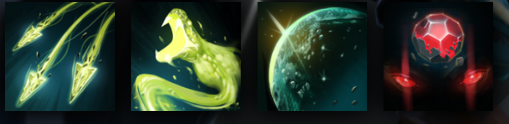

MEDUSA
LAUNCHES A POWERFUL ICY BLAST FROM ANYWHERE ON THE MAP
HISTORY
Beauty is power. This thought comforted Medusa--the youngest and loveliest of three beautiful Gorgon sisters, born to a sea goddess--because she alone of the sisters was mortal. It comforted her, that is, until the day masked assailants invaded the Gorgon realm and tore the two immortal sisters from their home, unmoved by their beauty or by their tears. One of the invaders seized Medusa as well, but then cast her aside with a disgusted look: 'This one has the mortal stink upon her. We have no use for that which dies.' Humiliated, enraged, Medusa fled to the temple of her mother and cast herself before the goddess, crying, 'You denied me eternal life--therefore I beg you, give me power! Power, so I can dedicate what life I have to rescuing my sisters and avenging this injustice!' After long thought, the goddess granted her daughter's request, allowing Medusa to trade her legendary beauty for a face and form of terrifying strength. Never for a moment has Medusa regretted her choice. She understands that power is the only beauty worth possessing--for only power can change the world.
ABILITIES
PAIRD WELL WITH
ENIGMA
SHADOW SHAMAN
LION